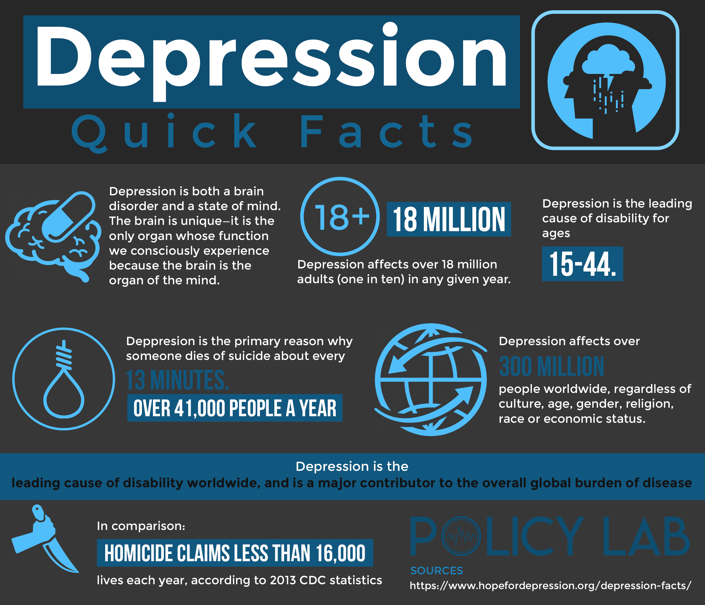

What is Depression?
It’s normal in human life to experience the feeling of sadness, loneliness, or grief. Usually, a person gets over it, although sometimes these emotions stay with a person and somehow won’t go away.
SOME FACTS ABOUT DEPRESSION
- Left untreated, depression is as costly as heart disease or AIDS to the US economy, costing over $51 billion in absenteeism from work and lost productivity and $26 billion in direct treatment cost.
Early Signs of Depression:
- Trouble concentrating, remembering details, and making decisions
- Fatigue
- Feelings of guilt, worthlessness, and helplessness ...
- Pessimism and hopelessness
- Insomnia, early-morning wakefulness, or sleeping too much
- Irritability
- Restlessness
- Loss of interest in things once pleasurable, including sex
- Overeating, or appetite loss
- Aches, pains, headaches, or cramps that won't go away
- Digestive problems that don't get better, even with treatment
- Persistent sad, anxious, or "empty" feelings
- Suicidal thoughts or attempts
How to treat Depression
Seek Professional Help
Possible Self-Treaments
Lifestyle Changes
- Exercise. Regular exercise can be as effective at treating depression as medication. Not only does exercise boost serotonin, endorphins, and other feel-good brain chemicals, it triggers the growth of new brain cells and connections, just like antidepressants do. ...
- Social support. Strong social networks reduce isolation, a key risk factor for depression. Keep in regular contact with friends and family, or consider joining a class or group. Volunteering is a wonderful way to get social support and help others while also helping yourself.
- Nutrition. Eating well is important for both your physical and mental health. Eating small, well-balanced meals throughout the day will help you keep your energy up and minimize mood swings.
- Sleep. Sleep has a strong effect on mood. When you don’t get enough sleep, your depression symptoms will be worse. Sleep deprivation exacerbates irritability, moodiness, sadness, and fatigue.
- Stress reduction. Make changes in your life to help manage and reduce stress. Too much stress exacerbates depression and puts you at risk for future depression.
- Relaxation techniques. As well as helping to relieve symptoms of depression, relaxation techniques may also reduce stress and boost feelings of joy and well-being.